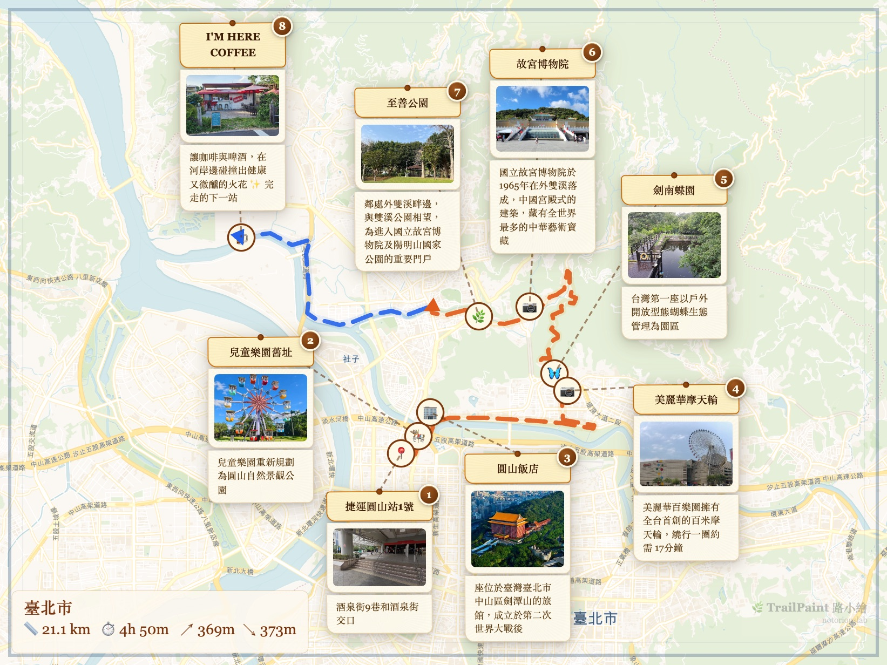

🌿
TrailPaint 路小繪
在真實地圖上畫出手繪風路線插畫
從照片、地圖、AI 三種方式建立，匯出即作品

📸 照片 EXIF 匯入
🌐 KML / GeoJSON
🗺️ GPX 匯入
📍 31 種景點圖示
🎨 手繪風 + AI 風格化
📖 Story Player
或直接開啟 故事播放器 播放你的 .trailpaint.json
GitHub
·
離線版下載
什麼是 TrailPaint？
TrailPaint 路小繪是一個免費、開源的瀏覽器工具，讓你在真實地圖上製作手繪風格的路線插畫。不需要安裝軟體、不需要註冊帳號，打開瀏覽器就能開始。
適合誰用？
登山健行、單車騎行、城市散步、旅行紀錄 — 任何想把走過的路線變成一張漂亮地圖的人。也很適合老師做校外教學路線圖、導遊製作行程說明素材、部落客為文章配上手繪路線圖。無論是分享到社群、放進部落格，或是印出來當紀念，TrailPaint 產出的地圖都像是一幅手繪插畫。
三種建立路線的方式
- 📷 從照片建立：拖 20 張照片進 TrailPaint，EXIF GPS 自動建景點（支援 iPhone HEIC / Android JPEG）
- 🗺️ 在地圖上手動：搜尋地點、畫路線、放景點卡片，3 步教學帶你上手
- 🤖 用 AI 生成：複製提示詞模板給 ChatGPT / Claude，描述行程產出可匯入的 JSON
一張地圖，多種輸出
- 圖片：PNG 多比例（IG / Story / 4:3）+ 3 種邊框 + 2 種濾鏡 + AI 提示詞 4 風格
- 備份：.trailpaint 專案檔（完整保留景點、路線、照片）
- 互通格式：GeoJSON / KML（給 Google My Maps、Google Earth、Gaia GPS 用）
- 分享：一鍵產生分享連結 + Player 嵌入碼
其他功能
- 31 種景點圖示（含三角點、集合點、生態類）
- GPX 匯入 + 海拔剖面圖（距離、爬升、預估時間）
- 5 種底圖（標準 / 衛星 / 等高線 / 暗色 / 多語向量）+ 拖曳截圖當底圖
- PWA 可安裝到手機主畫面像原生 App
- 支援繁體中文、英文、日文三種語言（自動偵測）
Story Player 故事播放器
用 TrailPaint 製作的路線地圖，可以透過 Story Player 以動態播放模式呈現：地圖自動飛到每個景點，依序展示照片與說明，搭配歷史地圖疊加，讓路線變成一段故事旅程。
- 自動播放：fly-to 動畫 + popup 卡片 + 可設定間隔與循環
- 可嵌入：用 iframe 嵌入任何網頁、部落格、教會網站
- 故事集合：多條路線組合成主題故事（如台灣宣教士腳蹤）
- 全螢幕：適合展場、教學投影使用
怎麼開始？
點擊上方「開始繪製」進入線上版，搜尋地點、畫路線、放景點卡片，完成後匯出你的手繪地圖。也可以從範例步道開始體驗，或是把行程描述丟給 ChatGPT / Claude，讓 AI 幫你產生景點資料再匯入。完全免費，資料儲存在你的瀏覽器本地，不會上傳到任何伺服器。
想看動態播放？在編輯器的選單中點「▶ 故事模式」，或直接開啟 故事地圖 瀏覽精選內容。